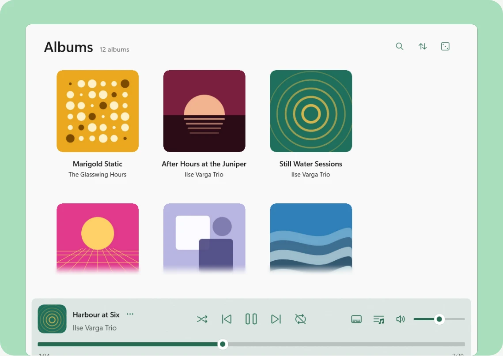
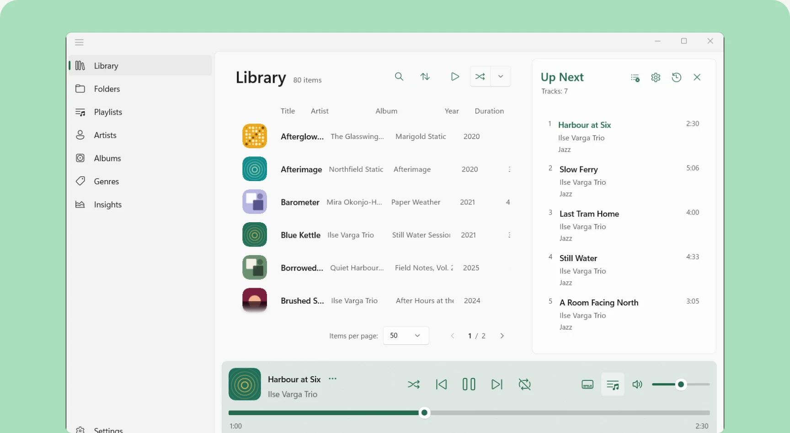
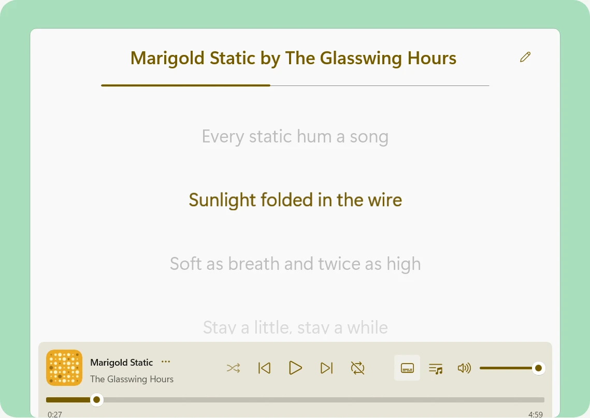
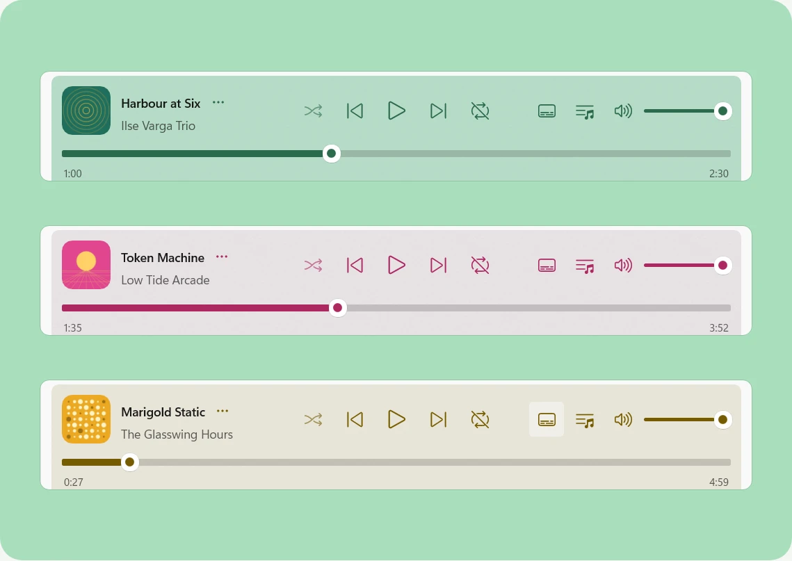
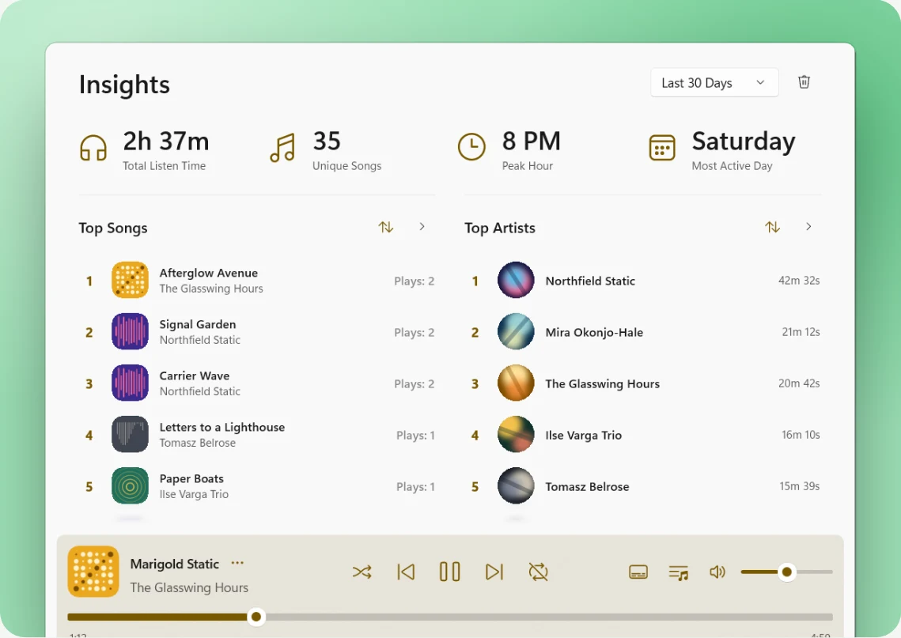

01
Your folders, your library
Point Nagi at your music and it builds the library, watches for changes and plays almost any format. Your own Navidrome or Jellyfin server sits alongside.

A fast, private music player for your local library on Windows.
Free and open source. Windows 10 (1809 or later) and Windows 11, x64 and ARM64.

01
Point Nagi at your music and it builds the library, watches for changes and plays almost any format. Your own Navidrome or Jellyfin server sits alongside.

02
Synced lyrics from tags, .lrc and .ttml files or optional online providers, highlighted as they are sung. Click a line to jump to it.

03
The player and accents follow the album that is playing, on Mica, Mica Alt or Acrylic, in light and dark.

04
Listening history and Insights are kept on your PC. Nagi stays offline unless you add a server or turn on an online service.

The Store version updates through the Store. From GitHub, install Nagi.appinstaller from the latest release so it updates itself.